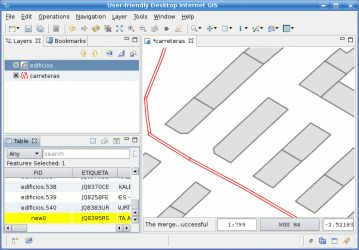
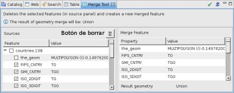

Fusiona geometrías y atributos de varios Features
Fusiona geometrías y atributos de varios Features Fusiona geometrías y atributos de varios Features
La Herramienta Fusión funciona seleccionando un grupo de features para ser fusionados en uno solo. Permite establecer la geometría y atributos del Feature fusionado. La geometría puede ser tanto la unión geométrica de las geometrías de los features a fusionar, como la geometría única de uno de los features a fusionar.
La Herramienta Fusión opera sobre la capa actual. Una vez que la Herramienta Fusión es seleccionada, puedes dibujar un Bounding Box para seleccionar los Features a fusionar. Se abrirá una vista para que puedas especificar exactamente de los Features seleccionados los valores de sus atributos que han de ser asumidos por el Feature resultante.
Puede darse el caso de que la unión geométrica produzca una geometría cuyo tipo no sea compatible con los tipos de geometría permitidos declarados en el FeatureType de la Capa. Por ejemplo, fusionar dos Polygons que no se tocan en una Capa polígono podría producir un MultiPolygon. En este caso, asignar la unión geométrica al fusionado atributo de geometría del Feature no será posible, pero una de las geometrías de los Features fuente puede ser establecida a través de la Vista de Fusión.
Cuando la Herramienta Fusión procede a crear el nuevo Feature fusionado, aquellos de los que proviene serán eliminados al mismo tiempo.
Hay que recordar que la Herramienta Fusión no guarda el resultado, sino que le permite deshacer la operación si se desea, o guardar los cambios en el repositorio de datos de fondo como normalmente haría con uDig.
|
Sistema de Referencia de Coordenadas (CRS) Cuando a la Herramienta Fusión se le ordena crear una nueva geometría como la unión de geometrías de los Features de entrada, la unión se realiza en el CRS actual de la Capa. |
Seleccionar la Herramienta Fusión desde la lista desplegable como se muestra en la Figura 1.

Figura 1. Seleccionar la Herramienta Fusión.
Dibujar el Bounding Box que será usado como filtro para seleccionar el Feature a ser fusionado. Al menos dos Features han de ser seleccionados para realizar una Fusión, pero la vista se abrirá aunque solo haya seleccionado un Feature.

Figura 2. Seleccionando los Features a fusionar.
Una vez que suelte el botón del ratón, los features que coincidan con el Bounding Box serán buscados y se mostrará la Vista de Fusión.
La Figura 3 muestra la Vista de Fusión, que consiste en dos paneles.
El panel de la izquierda es el panel de Fuente y presenta los features seleccionados, sus atributos, y permite seleccionar valores de atributo de los features de fuente para ser asignados al Feature fusionado.
El panel de la derecha se llama panel de Fusión de Features y presenta los atributos del feature que va a ser creado como el resultado de establecer sus atributos a través de los Features fuente.
Cuando se abre la Vista de fusión, el panel de Fusión de Feature es rellenado con los atributos del primer feature Fuente que sea encontrado (el primero por arriba en el panel de Fuente). El atributo de geometría del Feature fusionado asume el valor de la unión geométrica de las geometrías de los Features fuente, y si eso no es posible debido a un conflicto de tipo con el FeatureType de la capa, asume el valor de la geometría del primer Feature.

Figura 3. Vista de Fusión.
Mientras se abre la Vista de Fusión, el usuario puede establecer los atributos específicos en Fusión de Features para asumir los valores de otros Features fuente aparte de aquel que esté primero, activando los checkbox correspondientes al atributo deseado que se encuentre en Fuente.
También es posible seleccionar todo el conjunto de atributos de una única Fuente activando el checkbox correspondiente a la deseada Fuente.
La Figura 4 muestra como dos atributos, SOVEREIGN y COLOR_MAP han sido asignados a la Fusión de Features desde otra Fuente aparte de aquella por defecto.

Figura 4. Vista de Fusión con atributos especificados por el usuario.
Finalmente, cuando haya terminado de establecer los valores de los atributos geométricos y no geométricos para la Fusión de Features, pulse el botón de Finalizar en la Vista de Fusión.
La Herramienta Fusión creará la nueva Fusión de Features y eliminará las Fuentes en un paso único e irreversible.
El Mapa en la Figura 5 muestra como los dos edificios del ejemplo han sido fusionados en uno solo, y la Vista de Tabla con el Feature recién creado.

Figura 5. Resultado de la fusión
Para añadir más features para ser fusionados, selecciona aquellos features deseados mediante un Bounding Box y serán añadidos a la vista.
Para eliminar features, selecciona el feature a eliminar y haz click en el botón Borrar o dibuja un bounding box con la tecla Ctrl presionada y esos features seran eliminados.

Figura 6. Botón Borrar
{kind=link}
{kind=link}
{kind=link}